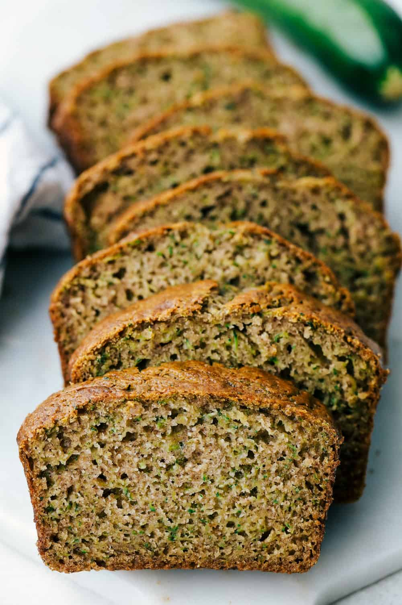
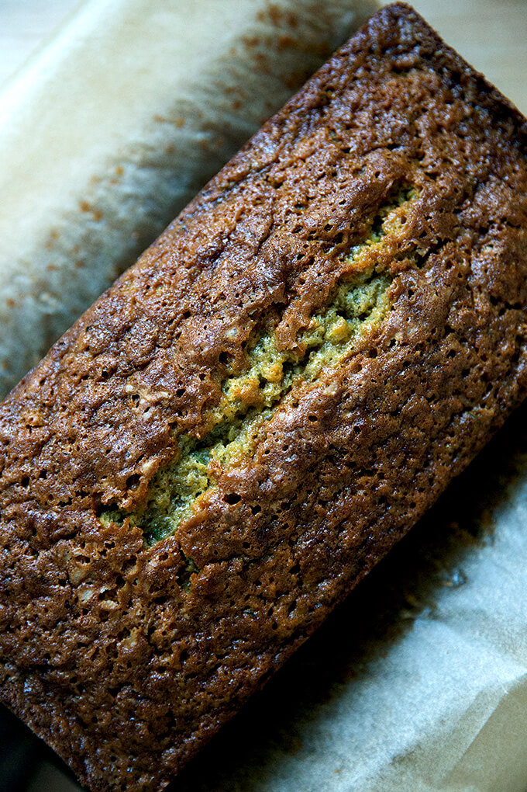
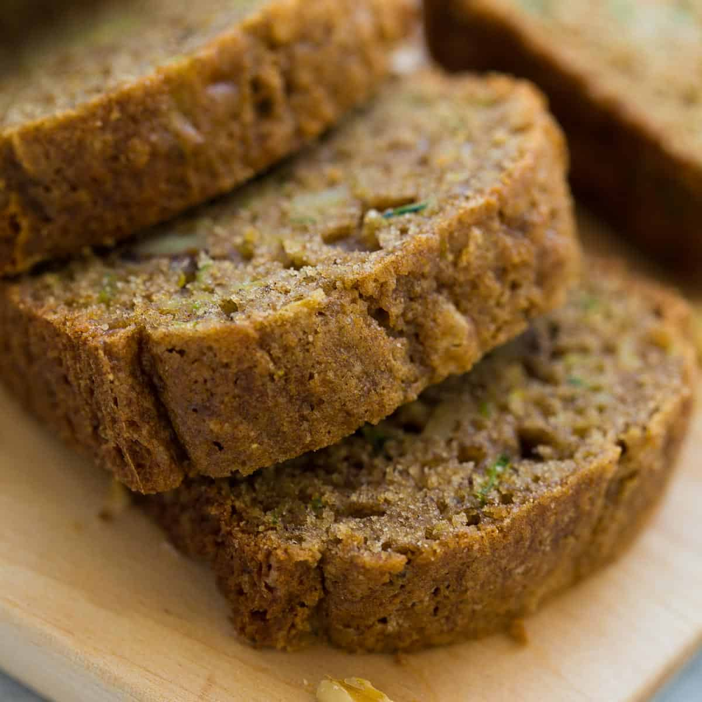
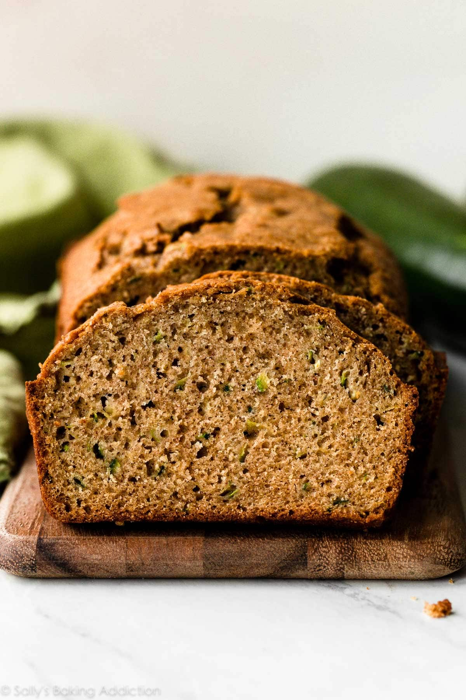

|  |  |  |  |
Grease and flour two 8x4 inch pans. Preheat oven to 325 degrees F.
Sift flour, salt, baking powder, baking soda, and cinnamon together in a bowl.
Beat eggs, oil, vanilla, and sugar together in a large bowl. Add sifted ingredients to the creamed mixture, and beat well. Stir in zucchini until combined well.
Pour batter into prepared pans, then bake for 40 to 60 minutes. Insert a toothpick into the center of the bread and if it comes out clean it is finished. Allow to cool for 20 minutes.